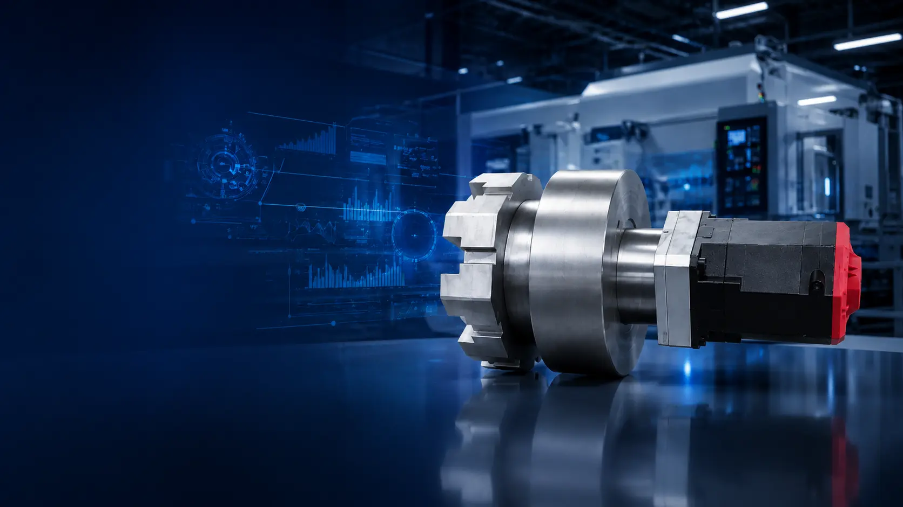
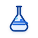

Precision Drive
N:1 비접촉 마그네틱(전기) 감속기
기어가 직접 맞물리지 않는 비접촉 방식으로 소음, 마모, 유지보수 및 윤활유 관리 부담을 줄이는 감속기입니다.
자세히 보기 →아이엠에르텍은 마그네틱 감속기와 PC-CNC 기술을 바탕으로, 기어가 직접 맞물리지 않는 자기장 기반 비접촉 구동 솔루션을 제안합니다. 저소음·저진동·고정밀 제어와 함께 마모 및 윤활유 미사용에 따른 오염·폐유 처리 부담을 줄여, 정밀 제조 현장에 보다 안정적인 구동 환경을 제공합니다.

기계적 맞물림 없이 자력으로 동력을 전달해 마모와 충격 부담을 낮춥니다.
접촉 부품 마모와 윤활유 관리 부담이 큰 장비에서 정기 점검 중심의 관리가 가능합니다.
로봇, 정밀 구동, 클린 환경 등 민감한 제조 조건에 적합한 기술을 지향합니다.
아이엠에르텍은 연구 기반 비접촉 구동 기술과 제어 기술을 산업 현장에 적용 가능한 솔루션으로 연결합니다.
연구성과를 기반으로 설립된 기술 혁신 기업

산업 적용을 목표로 한 구동·제어 기술 개발
글로벌 경쟁력 강화를 위한 표준화 활동
현장에서 체감할 수 있는 문제 개선 효과를 중심으로 기술 적용성을 검토합니다.
비접촉 토크 전달 구조로 기존 기계식 감속기의 부담 요소를 줄이는 방향을 제안합니다.
PC-CNC 기반 제어 기술을 통해 장비 연동, 데이터 활용, 스마트 제조 확장성을 고려합니다.
적용 장비, 운전 조건, 협력 범위를 기준으로 실질적인 도입 가능성을 검토합니다.
마그네틱 감속기, PC-CNC, 스마트 공작기계/CPS를 중심으로 제조 현장의 구동·제어 문제를 검토합니다.
장비 조건, 구동 방식, 협력 범위를 알려주시면 기술 적용 방향을 함께 검토합니다.